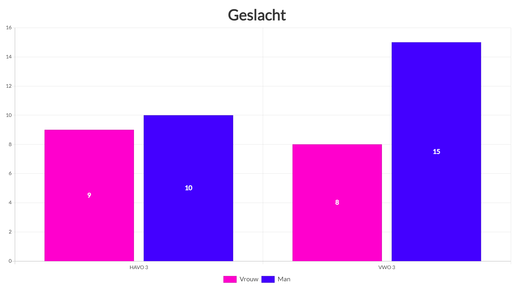

Of dat je er zo veel mee bezig was dat je vergat waar je was?
Er is een kans dat je dan beginnend verslaafd bent, maar hoe makkelijk gaat dat?
Zou er een verschil kunnen zitten tussen de verslavingsgevoeligheid van mannen en vrouwen?
Hoe zit het met verschillende leerniveaus?
Dat hebben wij in dit onderzoek onderzocht.
Hoe wij dit onderzoek hebben aangepakt lees je hieronder.
Onderzoeksvraag
Onze onderzoeksvraag is:
In hoeverre varieert de verslavingsgevoeligheid tussen HAVO en VWO bij derde klas leerlingen op het Zaanlands Lyceum?
Onderzoeksmethode
Voor het onderzoek hebben we zelf een spel ontwikkeld (zie deelvraag 6 voor de uitleg van de game).
Om te onderzoeken of er een verschil zit in verslavingsgevoeligheid tussen een derde klas HAVO en een derde klas VWO op het Zaanlands Lyceum.
We hadden met een mentor van een derde klas HAVO en een mentor van een derde klas VWO afgesproken dat we hun mentoruren over mochten nemen om ons onderzoek uit te voeren.
Om dit te onderzoeken hebben we 2 enquêtes gemaakt.
Een eerste korte enquête met vragen over hoe lang de leerling dacht dat ze bezig zouden zijn met het spelen van het spel.
De tweede enquête zou na het spelen van het spel worden ingevuld en zou vragen stellen over of de leerling langer bezig was dan ze hadden verwacht.
Werkwijze
We hebben bij beide klassen dezelfde les gegeven.
We begonnen met een korte introductie waarin we niet vermelden dat we gameverslaving onderzoeken, daarna lieten we de leerlingen de eerste korte enquête in vullen.
We lieten de leerlingen na het invullen van de enquête het spel spelen.
Naast het einde van het lesuur was er geen limiet op hoe lang de leerlingen mochten spelen.
Wanneer een leerling het gevoel kreeg dat ze genoeg hadden gespeeld of als een leerling geen zin meer had in het spelen van het spel, mochten ze stoppen.
Na het spelen van het spel lieten we de leerlingen de tweede enquête invullen.
Aan het einde van het mentoruur mochten de leerlingen weg.
We lieten ze niet eerder weg gaan als ze vroeg stopte met het spelen van het spel.


Wij verwachtten dat er een verschil zou zitten tussen de verslavingsgevoeligheid van een derde klas HAVO en een derde klas VWO.
Wij verwachtten dat de derde klas HAVO verslavingsgevoeliger zou zijn dan de derde klas VWO.
Hier staat een vergelijking van de enquêteresultaten tussen de derde klas HAVO en de derde klas VWO.
Bij de VWO-klas had 82,6% van de leerlingen langer gespeeld dan dat ze van tevoren hadden verwacht.
Bij de HAVO-klas ligt dit percentage lager dan bij VWO, namelijk op 44,4%.
We zagen in de HAVO-klas relatief veel leerlingen die gefrustreerd raakten met het spel en er kort daarna mee stopte en een ander spel gingen spelen.
Bij de VWO-klas was dit totaal niet het geval.
In de VWO-klas wou bijna iedereen de high score verbreken.
En zoals te zien in de in de cirkeldiagrammen hieronder heeft bijna iedereen op VWO het spel gespeeld langer gespeeld dan verwacht.
De VWO leerlingen speelden bijna allemaal totdat ze bij de maximale speeltijd waren, op 3 leerlingen na.
Bij de HAVO-klas waren de speeltijden een stuk meer verdeeld, met maar 5 van de 18 leerlingen die tot het einde van de tijd die ze kregen het spel speelden.

“Ik wou het graag blijven spelen” of “het spel was perfect”.
In de HAVO-klas waren de reacties over het algemeen wat neutraler, sommigen vonden het een leuk spel terwijl anderen het totaal niet leuk vonden met reacties als:
”Ik word al snel boos wanneer ik het spel speel” of “Het was wel leuk maar het was ook te makkelijk”.


In de VWO-klas waren er van de 23 leerlingen 3 ouder dan 14, dat is 13%
Dit kan natuurlijk ook invloed hebben op je gamegedrag en hoe je omgaat met de tijd. Als je jonger bent heb je misschien minder snel door hoe snel de tijd voorbijgaat.
Er was geen groot verschil in de resultaten tussen de mannen en vrouwen.
Er zaten relatief wel meer jongens in de VWO-klas dan in de HAVO-klas.
De leerlingen in de HAVO-klas waren over het algemeen ouder:
In de HAVO-klas waren er van de 18 leerlingen 7 ouder dan 14, dat is 38,9%
In de VWO-klas waren er van de 23 leerlingen 3 ouder dan 14, dat is 13,0%

Er was geen groot verschil in de resultaten tussen de mannen en vrouwen.

Onze hypothese was dat de derde klas HAVO leerlingen verslavingsgevoeliger zouden zijn dan de derde klas VWO leerlingen.
Aan de hand van de resultaten is af te leiden dat het juist andersom is dan wat we hadden verwacht.
De derde klas HAVO leerlingen werden snel gefrustreerd en waren minder geïnteresseerd in hoge scores halen en elkaars tijden te verbreken dan de derde klas VWO.
De VWO-klas werd meer in het spel geabsorbeerd en bijna alle VWO leerlingen speelden het spel door tot de tijd op was.
Ze waren een stuk competitiever dan de HAVO-klas, die in vergelijking het spel minder snel als competitief zag.
De VWO-klas was dus verslavingsgevoeliger dan de HAVO-klas, vooral wanneer het gaat om elkaars scores verbreken.
Het zou ook kunnen dat de HAVO leerlingen over het algemeen minder geïnteresseerd waren in het spel, waardoor ze sneller stopten met spelen. Ook zou het kunnen dat de VWO-klas het leuker vond om elkaars scores te verbreken omdat ze streven naar perfectionisme.
Nog een mogelijke verklaring is dat VWO leerlingen over het algemeen harder werken dan leerlingen op de HAVO, waardoor ze hier ook meer hun best deden.
De positievere reacties over het spel van de VWO-klas ten opzichte van de HAVO-klas zouden kunnen zijn omdat de VWO leerlingen meer uit het spel kregen, doordat ze het serieuzer namen en competitiever speelden.
Het feit dat de leerlingen in de HAVO-klas gemiddeld ouder waren kan natuurlijk ook invloed hebben op je gamegedrag en hoe je omgaat met de tijd.
Als je jonger bent heb je misschien minder snel door hoe snel de tijd voorbijgaat.
Discussie
We hebben voor dit onderzoek, zoals omschreven in de werkwijze de leerlingen een vragenlijst laten invullen voor en na het spelen van het spel.
Bij het bekijken van de resultaten moet wel rekening worden gehouden met verschillende zaken.
Wij hebben ons als groep gericht op ALLEEN één derde klas HAVO en één derde klas VWO op het Zaanlands Lyceum, waardoor dit onderzoek niet aselect is.
Daarnaast hebben we in totaal 18 HAVO leerlingen en 23 VWO leerlingen onderzocht, dit is een vrij klein aantal leerlingen. Het aantal leerlingen is dus te klein om echt een definitieve uitspraak te doen over onze onderzoeksvraag.
Om het onderzoek representatiever te maken, zouden we bijvoorbeeld meer klassen kunnen onderzoeken.
Dit zou de betrouwbaarheid van het onderzoek verhogen. Een grotere onderzoeksgroep zou de kans op toevallige resultaten verminderen.
We zijn wel van mening dat het gebruik van vragenlijsten over de verwachtingen van speeltijd een valide methode is van verslavingsgevoeligheid onderzoeken.
Samen met het spel dat ontworpen is om zoveel mogelijk verslavende elementen te bevatten werkte de enquêtes goed voor ons onderzoek.
Omdat we dezelfde enquêtevragen stelden aan HAVO en aan VWO is het ook goed vergelijkbaar.